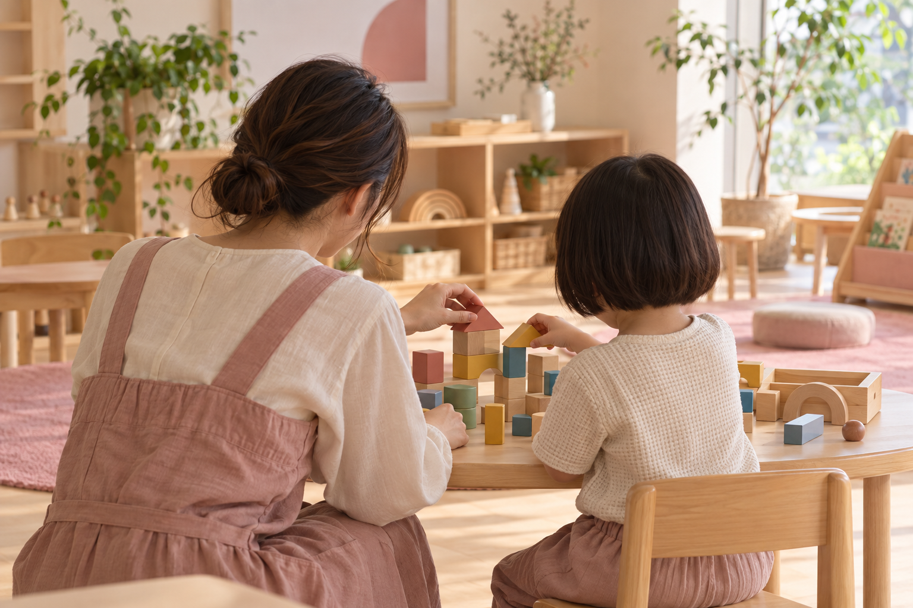

非公式の提案用モック。名称・教室・支援内容はすべて仮設定です。CMS・LINE・フォーム送信は未接続。写真はAI生成のイメージで、実在する施設・利用者・職員ではありません。
保護者の方へはじめの相談から、
一緒に考える場所。
お子さまの過ごし方や、気になること。まずは教室の支援内容を見ながら、相談先を探してみませんか。

AI生成のイメージ私たちの考え方 / 仮設定一人ひとりを知り、
支援を考える。
得意なこと、興味を持つこと、過ごしやすい環境。ご家族との対話と日々の様子をもとに支援方針を整理する、という情報設計案です。実際の運営方針は支給原稿の確認後に掲載します。
支援内容 / 構成例その子に合った、
関わり方を探して。
01個別の時間
興味や取り組みやすさを知るための個別活動を紹介する枠です。支援内容・専門職の体制は教室ごとに確認します。
02人と関わる時間
一緒に遊ぶ・伝える・待つなど、小集団での活動内容を掲載する構成です。療育の効果や達成を保証するものではありません。
03ご家族と話す時間
ご家庭での様子や相談事項を共有し、次の支援に反映する仕組みを紹介します。
教室を探す
個別の時間と小集団で過ごす時間を組み合わせる構成例です。実際のサービス・受入条件を示すものではありません。
見学までの流れ
相談内容を整理 → 教室へ問い合わせ → 日程を相談 → 見学
ご利用まで / 仮のご案内まず、知ることから。
- 教室を探す — エリアと対象から候補を確認。
- 見学について相談 — 支援内容や受入条件を教室へ確認。
- 見学・面談 — 過ごす場所と支援方針を確認。
- 利用手続き — 必要な手続き・条件は実際の案内で確認。
採用をご検討の方へ支援を話し合える、
チームをつくる。
仕事の一日、研修、職種別の条件をこの順番で紹介する採用ページ案です。実際の募集・待遇情報は掲載していません。
一日の流れを知る
準備 → 支援方針の共有 → 活動の支援 → 記録・振り返り。実際の勤務時間や業務内容は募集要項と合わせて掲載します。
学び合う環境
入職時の研修、相談の機会、専門職同士の連携を具体的に示す枠です。制度の有無を確認してから紹介します。
よくあるご質問
相談の前に何を確認すればよいですか？
対象年齢・支援内容・通える範囲を確認できるページ構成です。受入状況や利用条件は実際の教室に確認する設計とします。
教室ごとの違いを知りたいです。
各教室ページで対象、支援内容、設備、専門職の配置を同じ順番で紹介する案です。現在のデモ情報は仮設定です。
このページから見学や採用に申し込めますか？
申し込めません。下の相談内容プレビューは送信のない動作確認用です。
運営について
運営者情報・事業所指定情報・安全管理方針・情報公開資料を掲載する枠です。本デモには実在する法人名、住所、電話番号、職員情報を載せていません。